Artikel Terbaru
Baca tips camping, panduan wisata, dan informasi terbaru dari Batu Sunrise Camp.
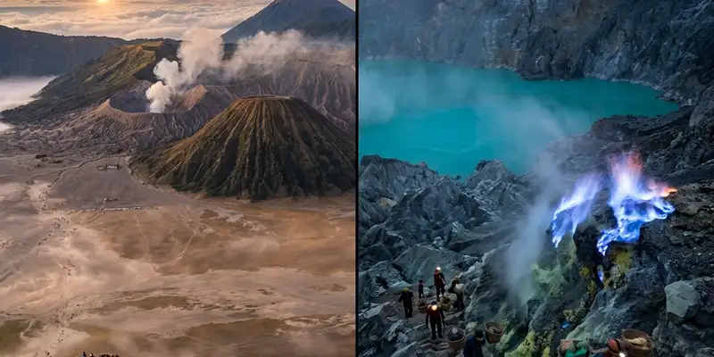
PanduanWisata Motor Trail Bromo dari Malang untuk Pemula
Perjalanan motor trail Bromo dari Malang dirancang khusus sebagai fun trail yang sangat ramah bagi pemula, dilengkapi panduan pemandu profesional.
Baca Selengkapnya Panduan
Panduan
Offroad Motor: Wisata Motor Trail untuk Peserta Solo
Offroad motor trail kini banyak dikemas sebagai wisata fun trail yang aman untuk peserta solo maupun rombongan kecil dengan pendampingan profesional.
Baca Selengkapnya Panduan
Panduan
Cara Memilih Vendor Outbound untuk Team Building
Vendor outbound yang tepat dapat dipilih dengan menilai pengalaman, standar keselamatan, fleksibilitas program, serta rekam jejak event sebelumnya.
Baca Selengkapnya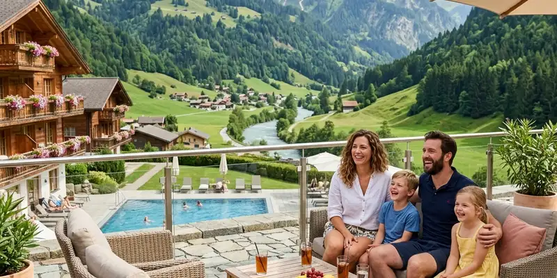
PanduanIde Games Outbound Outdoor Seru untuk Tim Kantor
Games outbound outdoor memanfaatkan medan alam untuk menguji kekompakan dan ketahanan tim secara fisik maupun mental di alam terbuka.
Baca Selengkapnya Panduan
Panduan
Ide Games Outbound Indoor untuk Tim Kantor
Ide games outbound indoor adalah permainan ruang tertutup yang menekankan strategi, komunikasi, dan kolaborasi tanpa memerlukan aktivitas fisik berat.
Baca Selengkapnya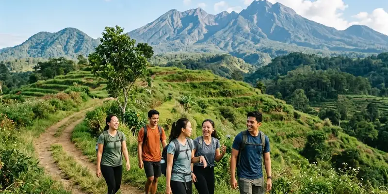
PanduanApa Itu Team Building dan Mengapa Penting bagi Tim Kantor Modern
Team building adalah kegiatan terstruktur yang bertujuan meningkatkan kolaborasi, komunikasi, dan rasa saling percaya antaranggota tim kantor modern.
Baca Selengkapnya Panduan
Panduan
Rute dan Persiapan Offroad di Malang Raya
Rute offroad Malang Raya bervariasi mulai dari hutan pinus hingga lautan pasir Bromo, sehingga persiapan kendaraan dan fisik amat penting.
Baca Selengkapnya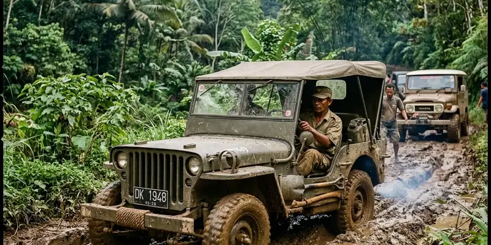
EventOffroad League Malang: Event dan Peluang Kolaborasi
Offroad league Malang adalah rangkaian kegiatan komunitas berbentuk perjalanan di jalur tertentu yang sekaligus menjadi ajang promosi wisata.
Baca Selengkapnya Panduan
Panduan
Cara Bergabung Komunitas Offroad Malang untuk Pemula
Panduan bergabung dengan komunitas offroad Malang bagi pemula, mulai dari kegiatan terbuka, syarat kendaraan, hingga etika dasar berkomunitas.
Baca Selengkapnya Panduan
Panduan
Offroad Malang Raya: Panduan Lengkap Komunitas dan Event
Offroad Malang Raya adalah aktivitas menjelajah medan berat yang didukung komunitas aktif dan event rutin yang juga berperan dalam promosi wisata.
Baca Selengkapnya Panduan
Panduan
Vendor Outbound Rafting Pelajar: Cara Memilih Tepat
Vendor outbound rafting pelajar yang tepat dapat dikenali dari pengalaman menangani rombongan sekolah, kelengkapan alat, dan sertifikasi.
Baca Selengkapnya Panduan
Panduan
Study Tour Rafting: Panduan Perencanaan untuk Sekolah
Study tour rafting adalah kegiatan sekolah yang memadukan wisata edukasi dengan aktivitas arung jeram yang terencana dengan baik.
Baca Selengkapnya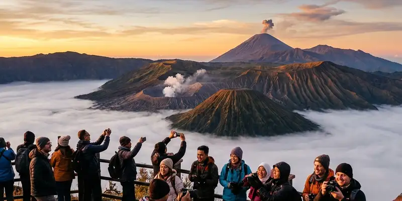
EdukasiManfaat Rafting Siswa dalam Kegiatan Study Tour
Manfaat rafting siswa mencakup pelatihan kerja sama tim, peningkatan kepercayaan diri, dan pengenalan lingkungan alam secara langsung.
Baca Selengkapnya Panduan
Panduan
Rafting Pelajar: Panduan Lengkap untuk Study Tour dan Kegiatan Sekolah
Rafting pelajar adalah kegiatan arung jeram yang dirancang khusus untuk siswa dalam rangka study tour atau kegiatan sekolah.
Baca Selengkapnya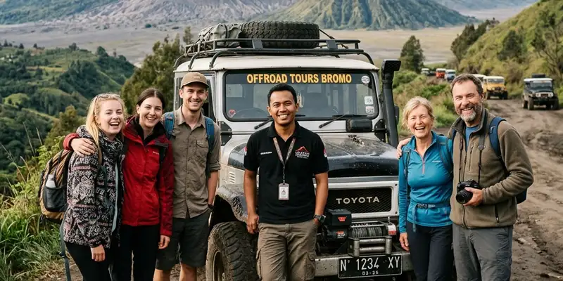
PanduanTips Memilih Vendor Offroad untuk Akhir Pekan
Vendor offroad adalah penyedia jasa yang menawarkan paket kegiatan berkendara di medan berat lengkap dengan fasilitas pendukungnya.
Baca Selengkapnya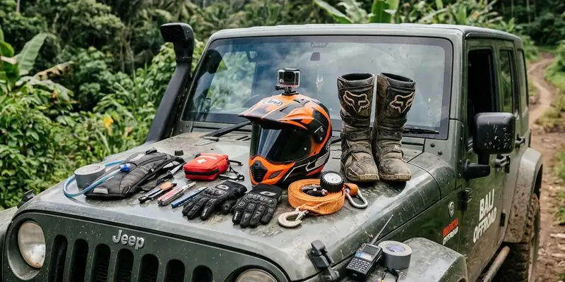
PanduanPerlengkapan Wajib Sebelum Ikut Kegiatan Offroad
Perlengkapan offroad adalah alat keselamatan dan perkakas pendukung yang perlu disiapkan sebelum berkendara di medan berat.
Baca Selengkapnya Panduan
Panduan
Offroad Adalah: Pengertian dan Sejarah Singkatnya
Offroad adalah istilah yang merujuk pada aktivitas berkendara di luar jalur jalan beraspal melewati medan alami menggunakan kendaraan khusus.
Baca Selengkapnya Panduan
Panduan
Apa Itu Offroad? Pengertian dan Panduan Lengkap
Offroad adalah aktivitas berkendara di luar jalan aspal menggunakan kendaraan yang dirancang atau dimodifikasi untuk melewati medan berat.
Baca Selengkapnya Panduan
Panduan
Tips Berkunjung ke Coban Talun untuk Offroad dan Air Terjun
Tips berkunjung ke Coban Talun meliputi melakukan reservasi offroad, pakaian yang sesuai, serta berkunjung pagi hari agar wisata lebih maksimal.
Baca Selengkapnya Panduan
Panduan
Coban Talun, Air Terjun dengan Sensasi Offroad Seru
Coban Talun adalah air terjun di kawasan Bumiaji, Kota Batu, yang dikelilingi hutan pinus dan formasi bebatuan alami, dikenal dengan sensasi offroad seru.
Baca Selengkapnya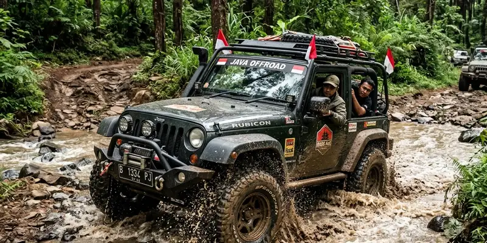
PanduanJalur Offroad Coban Talun, Ini Karakteristik Medannya
Jalur offroad Coban Talun melintasi hutan pinus, sungai kecil, dan perkebunan sayur dengan kontur tanah terjal dan berbatu yang menantang.
Baca Selengkapnya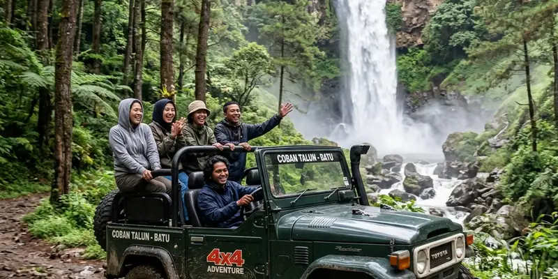
PanduanOffroad Coban Talun, Panduan Lengkap Satu Paket Wisata Air Terjun
Offroad Coban Talun adalah petualangan jeep 4x4 menyusuri jalur hutan pinus dan sungai, dipadukan dalam paket wisata air terjun.
Baca Selengkapnya Panduan
Panduan
Tips Persiapan Sebelum Bermain Paintball di Batu Malang
Tips persiapan sebelum bermain paintball di Batu Malang meliputi mengenakan pakaian yang menutupi seluruh tubuh, memastikan kondisi fisik, dan strategi.
Baca Selengkapnya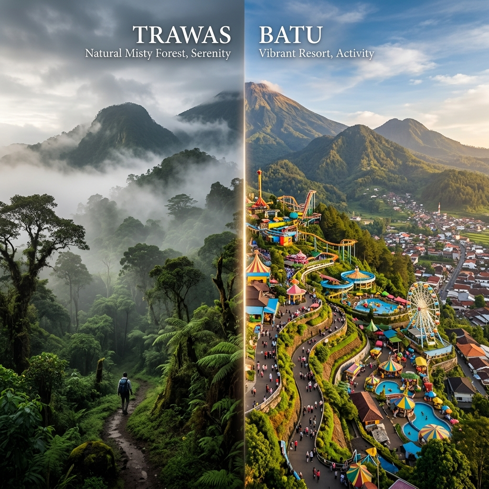
PanduanPaintball Terdekat di Batu Malang, Cara Memilihnya
Paintball terdekat di Batu Malang dapat ditemukan dengan mempertimbangkan jarak lokasi, kelengkapan fasilitas keselamatan, serta kesesuaian paket permainan.
Baca Selengkapnya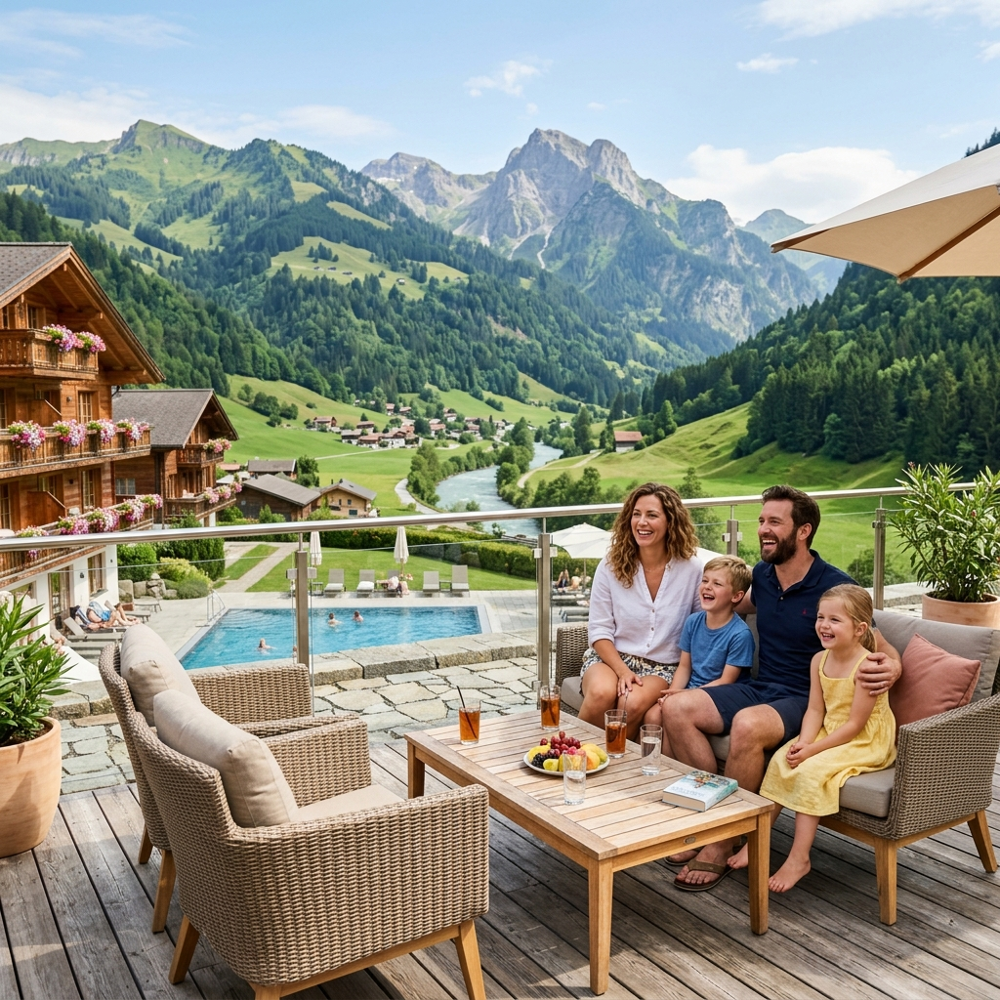
PanduanPaintball Malang, Aturan Main yang Wajib Diketahui
Paintball Malang memiliki aturan main yang wajib dipatuhi, mulai dari penggunaan masker pelindung hingga larangan menembak dekat.
Baca Selengkapnya Panduan
Panduan
Paintball Batu Malang, Lokasi, Aturan, dan Keseruannya
Paintball Batu Malang adalah permainan tim menggunakan senjata khusus berisi peluru cat yang dimainkan di arena outdoor.
Baca Selengkapnya Panduan
Panduan
Pantai Selatan Jawa Timur yang Belum Ramai Wisatawan
Pantai selatan Jawa Timur menjadi salah satu destinasi wisata Jawa Timur yang masih tergolong sepi wisatawan.
Baca Selengkapnya Panduan
Panduan
Desa Wisata Rintisan Jawa Timur, Belum Banyak Diketahui
Desa wisata rintisan Jawa Timur menawarkan pengalaman budaya dan alam pedesaan yang masih otentik serta belum banyak dikunjungi wisatawan.
Baca Selengkapnya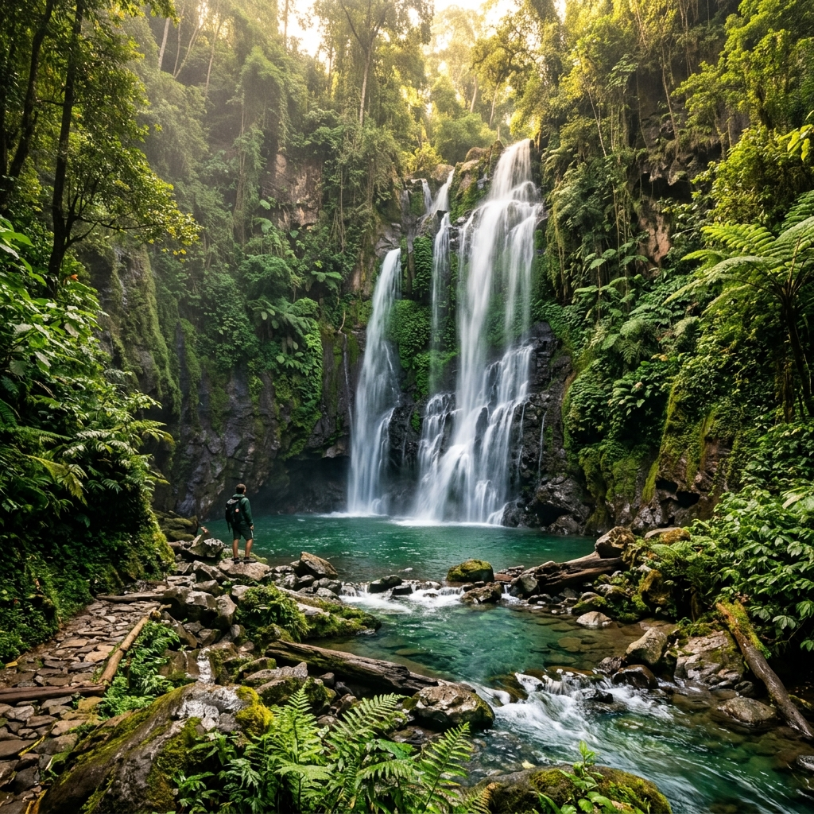
PanduanAir Terjun Tersembunyi di Jawa Timur, Sepi Wisatawan
Air terjun tersembunyi di Jawa Timur menjadi bagian penting dari destinasi jatim tersembunyi dengan pemandangan alam asri.
Baca Selengkapnya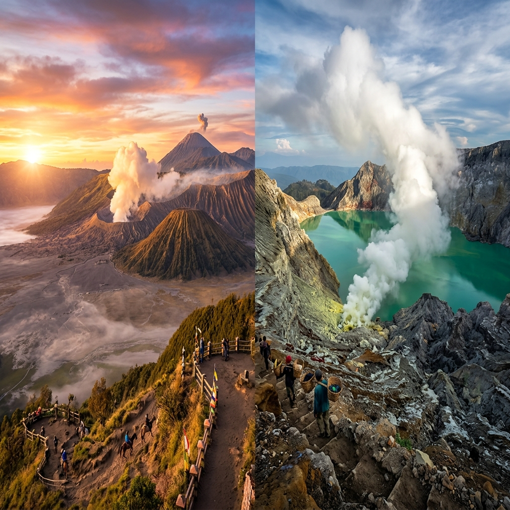
PanduanWaktu Terbaik Kunjungi Kawah Ijen dan Bromo, Ini Tipsnya
Waktu terbaik ke Kawah Ijen dan Bromo umumnya berada pada musim kemarau dengan kunjungan dini hari, karena cuaca lebih cerah.
Baca SelengkapnyaIkon Wisata Jatim: Mengenal Bromo dan Ijen Lebih Dekat
Ikon wisata Jatim merujuk pada destinasi alam yang menjadi simbol kekuatan pariwisata Jawa Timur, Gunung Bromo dan Kawah Ijen.
Baca Selengkapnya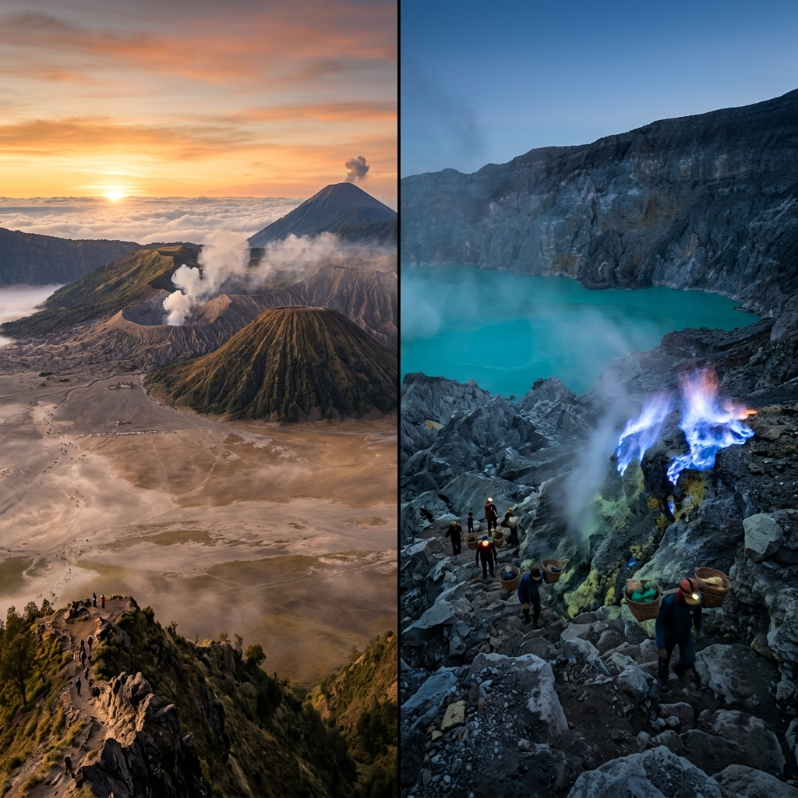
PanduanWisata Bromo Ijen: Panduan Paket Perjalanan Lengkap
Wisata Bromo Ijen adalah rangkaian perjalanan yang memadukan kunjungan ke Gunung Bromo dan Kawah Ijen dalam satu rute wisata.
Baca Selengkapnya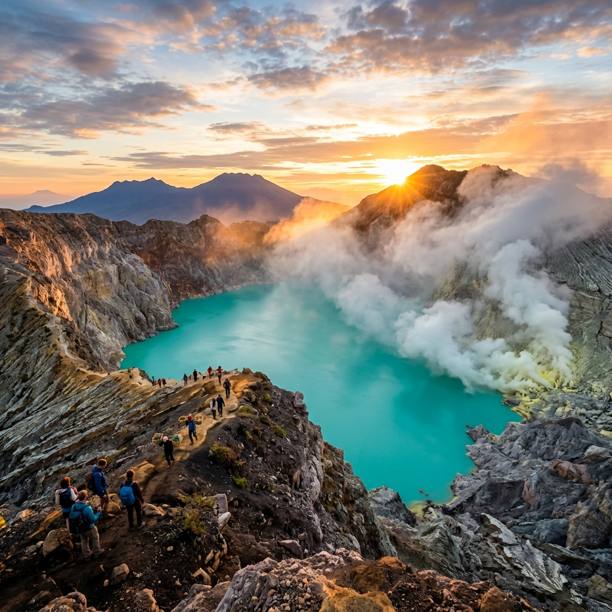
PanduanKawah Ijen: Panduan Lengkap Wisata Blue Fire Jatim
Kawah Ijen adalah kawasan gunung berapi yang terkenal karena fenomena blue fire dan danau kawah asam terbesar di dunia.
Baca Selengkapnya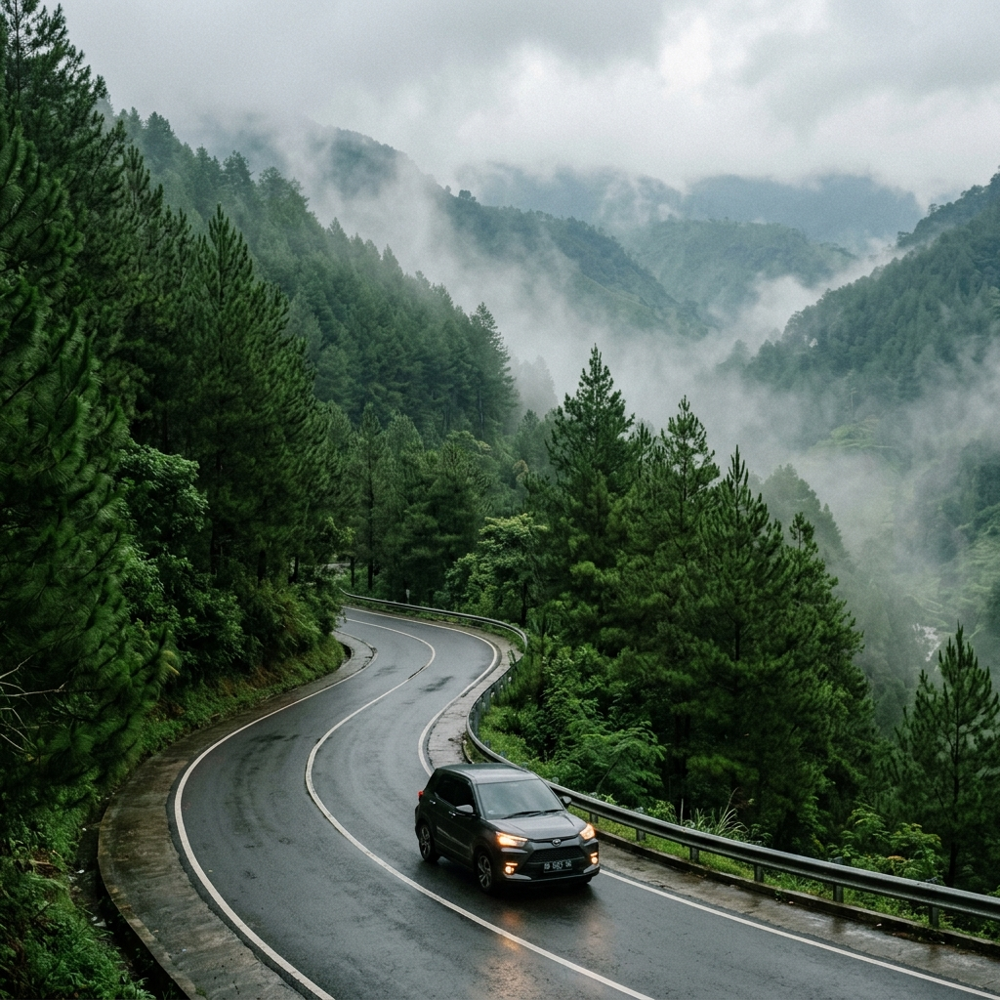
PanduanTips Berkunjung ke Trawas, Panduan untuk Pemula
Tips berkunjung ke Trawas meliputi mempersiapkan pakaian hangat, memesan akomodasi lebih awal, dan mengecek kondisi akses jalan.
Baca Selengkapnya Panduan
Panduan
Alternatif Wisata Trawas Selain Batu, Ini Pilihannya
Temukan alternatif wisata Trawas selain Batu yang menawarkan ketenangan, alam pegunungan asri, dan aktivitas outdoor menarik.
Baca Selengkapnya Panduan
Panduan
Trawas vs Batu, Mana yang Cocok untuk Liburan Anda?
Trawas vs Batu dapat dibandingkan dari sisi suasana, fasilitas wisata, dan akses jalan. Pilih yang paling sesuai preferensi Anda.
Baca Selengkapnya Panduan
Panduan
Wisata Trawas, Alternatif Batu yang Sering Dilewatkan
Wisata Trawas di Mojokerto menawarkan udara sejuk dan pemandangan alam serupa Batu, namun dengan suasana yang lebih tenang.
Baca Selengkapnya Panduan
Panduan
Tips Hemat Trip Jatim Multi Hari, Ini Panduannya
Tips hemat trip Jatim multi hari meliputi menyusun anggaran sejak awal, memilih transportasi efisien, dan menentukan akomodasi di lokasi strategis.
Baca Selengkapnya Panduan
Panduan
Trip Jatim Multi Hari, Kombinasi Destinasi Terbaik
Trip Jatim multi hari sering menggabungkan destinasi Bromo dengan Kawah Ijen, atau Malang dengan Batu yang saling melengkapi.
Baca Selengkapnya Panduan
Panduan
Itinerary Jatim: Cara Menyusun Rute Trip Efisien
Itinerary Jatim yang efisien disusun dengan mengurutkan destinasi berdasarkan kedekatan lokasi dan menyesuaikan jadwal kunjungan.
Baca Selengkapnya Panduan
Panduan
Destinasi Wisata Jawa Timur untuk Trip Multi Hari
Destinasi wisata Jawa Timur dari gunung, air terjun, hingga kota wisata dapat digabung dalam format trip multi hari yang efisien.
Baca Selengkapnya Panduan
Panduan
Tips dan Persiapan Sebelum Ikut Offroad Batu Malang
Persiapan offroad Batu Malang meliputi memilih pakaian yang sesuai medan, memastikan kondisi fisik dalam keadaan baik, dan mengecek cuaca.
Baca Selengkapnya Panduan
Panduan
Kendaraan Offroad di Malang, Jenis dan Fungsinya
Kendaraan offroad di Malang umumnya berupa jeep 4x4 dengan penggerak roda empat untuk menjaga traksi di medan berbukit dan berlumpur.
Baca Selengkapnya Panduan
Panduan
Jalur Offroad Batu Malang, Seperti Apa Medannya?
Jalur offroad Batu Malang umumnya berupa medan berbukit dengan tanjakan curam, jalur berbatu, dan area berlumpur yang menantang.
Baca Selengkapnya Panduan
Panduan
Offroad Malang: Jalur, Kendaraan, dan Tingkat Keseruan
Offroad Malang adalah aktivitas wisata petualangan yang mengajak peserta menjelajahi medan berbukit, tanah berbatu, dan jalur alami menggunakan jeep 4x4.
Baca Selengkapnya Panduan
Panduan
Contoh Event Musiman Wisata Sepanjang Tahun
Contoh event musiman wisata mencakup festival budaya, perayaan keagamaan, event musim kemarau seperti festival pantai, serta event musim hujan.
Baca Selengkapnya Panduan
Panduan
Manfaat Kalender Event Musiman Wisata bagi Wisatawan
Manfaat kalender event musiman wisata utamanya adalah membantu wisatawan menghemat biaya, menghindari kepadatan pengunjung, dan memilih waktu kunjungan.
Baca Selengkapnya Panduan
Panduan
Cara Membaca Musim Ramai dan Sepi Wisata
Musim ramai dan sepi wisata adalah periode dalam kalender tahunan yang menunjukkan tingkat kunjungan tinggi atau rendah di suatu destinasi.
Baca Selengkapnya Panduan
Panduan
Kalender Event Musiman Wisata: Panduan Lengkap Merencanakan Perjalanan
Daftar terjadwal yang memetakan festival, hari libur, dan musim kunjungan untuk membantu merencanakan waktu berwisata terbaik.
Baca Selengkapnya Keamanan
Keamanan
Tips Menjaga Keamanan Tenda dan Barang Bawaan di Malam Hari
Tidur lebih nyenyak dengan sistem keamanan sederhana. Ketahui cara menyimpan barang berharga saat Anda tertidur di alam bebas.
Baca Selengkapnya
Persiapan
Panduan Packing Tas Carrier yang Efektif dan Seimbang untuk Pemula
Beban terasa berat? Mungkin cara packing Anda salah. Pelajari distribusi beban agar punggung tidak cepat lelah saat trekking.
Baca Selengkapnya
Edukasi
Mengenal Jenis Pepohonan yang Ada di Kawasan Hutan Pinus Batu
Eksplorasi lebih dalam! Kenali berbagai jenis pohon pinus dan vegetasi khas pegunungan yang mengelilingi area perkemahan kita.
Baca Selengkapnya
Kesehatan
Cara Melakukan Pertolongan Pertama pada Luka Ringan Saat Camping
Tergores ranting atau terkena panas api? Jangan panik! Inilah langkah medis sederhana menangani luka saat jauh dari pusat kota.
Baca Selengkapnya
Fotografi
Tips Mengambil Foto Sunrise yang Estetik Hanya dengan Smartphone
Ingin foto sunrise seperti profesional? Gunakan pengaturan rahasia di HP Anda untuk menangkap gradasi warna fajar di Batu Malang.
Baca Selengkapnya
Kesehatan
Manfaat Menghirup Udara Pegunungan untuk Kesehatan Pernapasan
Udara Batu bukan sekadar dingin. Kandungan oksigen murni di dataran tinggi sangat efektif mendetoks paru-paru dari polusi kota.
Baca Selengkapnya
Tips
Tips Menghemat Baterai Gadget Saat Camping Tanpa Listrik
Baterai HP cepat habis karena dingin? Lakukan pengaturan ini agar HP tetap menyala untuk keperluan darurat selama camping.
Baca Selengkapnya
Budaya
Etika Berinteraksi dengan Penduduk Lokal di Sekitar Area Wisata Batu
Jadilah wisatawan yang sopan! Pelajari cara berkomunikasi dan norma lokal agar kehadiran Anda disambut hangat oleh warga desa.
Baca Selengkapnya
Kesehatan
Cara Mengatasi Penyakit Ketinggian (Altitude Sickness) Saat Camping di Pegunungan
Pusing dan mual saat berkemah di tempat tinggi? Waspadai gejala penyakit ketinggian dan ketahui cara penanganan pertamanya.
Baca Selengkapnya
Review
Review Lengkap Fasilitas Batu Sunrise Camp, Surganya Para Campers di Malang
Bongkar tuntas fasilitas unggulan yang menjadikan Batu Sunrise Camp sebagai destinasi kemah favorit wisatawan dari berbagai kota.
Baca Selengkapnya
Informasi
Panduan Lengkap Menyewa Campervan untuk Camping di Batu Malang
Ingin merasakan liburan nomaden dengan campervan? Simak panduan lengkap menyewa dan memilih lokasi campervan di Batu.
Baca Selengkapnya
Rekomendasi
5 Rekomendasi Tempat Nongkrong Asik Setelah Camping di Batu
Lelah setelah berkemah? Bersantai sejenak di kafe-kafe estetik sekitar Batu ini sebelum kembali ke rutinitas harian Anda.
Baca Selengkapnya
Tips
Menjaga Kebersihan Tenda: Tips Ampuh Usir Lembap dan Bau Apek
Tenda yang lembap bisa merusak mood liburan. Terapkan tips ini agar bagian dalam tenda Anda selalu kering dan wangi.
Baca Selengkapnya
Pengetahuan
Manfaat Api Unggun Selain untuk Menghangatkan Badan
Api unggun punya fungsi lebih dari sekadar perapian. Ketahui manfaat tersembunyi dari menyalakan api saat di alam bebas.
Baca Selengkapnya
Tips
Aturan Membawa Makanan ke Camping Ground agar Terhindar dari Binatang Liar
Jangan sampai tenda Anda diacak-acak monyet atau serangga. Ketahui cara aman menyimpan bekal makanan di alam terbuka.
Baca Selengkapnya
Persiapan
5 Kesalahan Umum Pendaki Pemula Saat Camping di Dataran Tinggi
Baru pertama kali kemah di pegunungan? Hindari 5 kesalahan fatal ini agar pengalaman outdoor Anda tetap aman dan menyenangkan.
Baca Selengkapnya
Tips
Tips Memilih Sleeping Bag untuk Camping di Udara Dingin Batu Malang
Tidur nyenyak di alam bebas sangat bergantung pada kantong tidur Anda. Ketahui cara memilih sleeping bag terbaik di sini.
Baca Selengkapnya
Aktivitas
Aktivitas Pagi Seru yang Wajib Dicoba Saat Camping di Batu Malang
Udara pagi adalah waktu terbaik untuk eksplorasi. Simak rekomendasi kegiatan seru menyambut pagi di area perkemahan.
Baca Selengkapnya
Persiapan
5 Persiapan Penting Sebelum Camping Bareng Teman di Batu Malang
Camping beramai-ramai tentu seru, tapi butuh koordinasi. Cek panduan ini agar liburan bareng sahabat di Batu berjalan lancar.
Baca Selengkapnya
Tips
Mengenal Etika dan Aturan Dasar Saat Berkunjung ke Camping Ground
Jadilah pekemah yang bijak! Ketahui etika dasar dan aturan tak tertulis saat berada di area perkemahan alam terbuka.
Baca Selengkapnya
Keluarga
5 Alasan Mengapa Batu Sunrise Camp Cocok untuk Liburan Keluarga dan Ramah Anak
Mencari tempat liburan akhir pekan yang aman untuk si kecil? Temukan alasan mengapa camping di sini sangat ramah anak.
Baca Selengkapnya
Tips
Cara Mengatasi Hawa Dingin Ekstrem Saat Berkemah di Batu Malang
Jangan sampai hipotermia mengganggu liburan Anda. Terapkan cara ampuh ini untuk melawan suhu dingin pegunungan.
Baca Selengkapnya
Informasi
Sewa Alat Camping di Batu Malang Terlengkap dan Murah
Tidak punya tenda? Jangan khawatir! Temukan rekomendasi tempat sewa alat camping murah dan lengkap di Batu Malang.
Baca Selengkapnya
Rekomendasi
Spot Menikmati Sunrise Terbaik Saat Camping di Batu Malang
Awali pagi Anda dengan pemandangan magis. Inilah rekomendasi spot terbaik untuk menikmati matahari terbit di kawasan Batu.
Baca Selengkapnya
Tips
Tips Aman dan Nyaman Camping Saat Musim Hujan di Batu Malang
Jangan biarkan hujan merusak liburan! Simak tips jitu berkemah di musim hujan agar tetap hangat, kering, dan seru.
Baca Selengkapnya
Rekomendasi
5 Spot Foto Instagramable Paling Memukau di Batu Sunrise Camp
Penuhi feed media sosial Anda dengan foto-foto estetik! Ini dia spot terbaik untuk berfoto di area Batu Sunrise Camp.
Baca Selengkapnya Persiapan
Persiapan
Rekomendasi Pakaian yang Nyaman dan Aman untuk Camping di Batu Malang
Persiapkan pakaian yang tepat agar Anda tetap hangat dan nyaman saat menikmati udara pegunungan Batu Malang.
Baca Selengkapnya
Tips
Tips Membuat Api Unggun yang Aman Saat Camping di Batu Malang
Api unggun adalah bagian tak terpisahkan dari camping. Ketahui cara membuatnya dengan aman dan ramah lingkungan.
Baca Selengkapnya
Tips
Cara Memilih Tenda yang Tepat untuk Camping di Udara Dingin Batu Malang
Jangan salah pilih tenda! Ketahui spesifikasi tenda yang paling pas untuk menahan hawa dingin pegunungan Batu Malang.
Baca Selengkapnya
Persiapan
Pilihan Makanan Praktis dan Menghangatkan untuk Camping di Batu Malang
Bingung mau masak apa saat kemah? Berikut rekomendasi bekal makanan lezat, praktis, dan cocok untuk cuaca dingin.
Baca Selengkapnya
Wisata
5 Destinasi Wisata Alam Menarik di Sekitar Area Camping Batu Malang
Maksimalkan liburan Anda! Jelajahi berbagai destinasi wisata alam memukau yang berdekatan dengan area camping di Batu Malang.
Baca Selengkapnya
Tips
Manfaat Camping di Batu Malang untuk Healing dan Mengurangi Stres
Lepaskan beban pikiran sejenak. Ketahui bagaimana segarnya udara Batu Malang bisa menjadi terapi healing terbaik untuk Anda.
Baca Selengkapnya
Persiapan
Daftar Peralatan Camping yang Wajib Dibawa saat Berkemah di Batu Malang
Suhu dingin di Batu Malang butuh persiapan khusus. Cek daftar barang bawaan wajib agar kemah Anda tetap hangat dan aman.
Baca Selengkapnya
Panduan
Panduan Rute dan Akses Menuju Tempat Camping di Batu Malang
Jangan sampai tersesat! Simak panduan rute jalan terbaik menuju kawasan camping favorit di Batu Malang.
Baca Selengkapnya
Rekomendasi
Rekomendasi Tempat Camping di Batu Malang dengan View Terbaik
Temukan pilihan tempat camping di Batu Malang yang menyajikan pemandangan alam memukau untuk liburan Anda.
Baca Selengkapnya
Informasi
Daftar Harga Paket Camping Batu Malang Terbaru 2026
Informasi lengkap mengenai harga paket camping Batu Malang dengan berbagai fasilitas menarik dan terjangkau.
Baca Selengkapnya
Tips
Tips Camping di Batu Malang agar Pengalaman Makin Berkesan
Panduan lengkap untuk mempersiapkan camping di kawasan Batu Malang agar liburan Anda aman, nyaman, dan tak terlupakan.
Baca Selengkapnya
Rekomendasi
Rekomendasi Spot Camping Terbaik di Kawasan Batu Malang
Temukan spot-spot camping terbaik di kawasan Batu Malang yang menawarkan pemandangan indah dan fasilitas terbaik.
Baca Selengkapnya
Keluarga
Panduan Camping Keluarga di Batu Sunrise Camp
Camping bersama keluarga semakin menyenangkan di Batu Sunrise Camp dengan fasilitas ramah anak.
Baca Selengkapnya
Aktivitas
Aktivitas Seru yang Bisa Dilakukan saat Camping di Batu
Selain menikmati pemandangan, ada banyak aktivitas menarik yang bisa dilakukan saat camping di kawasan Batu.
Baca Selengkapnya
Wisata
Menikmati Keindahan Langit Malam saat Camping di Batu Malang
Camping di ketinggian memberikan pengalaman menakjubkan menyaksikan langit malam bertabur bintang.
Baca Selengkapnya